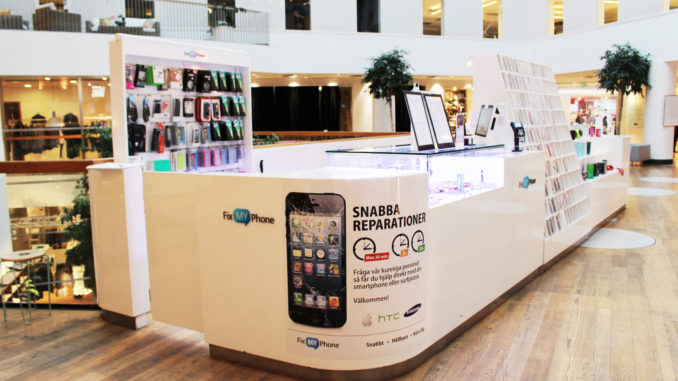
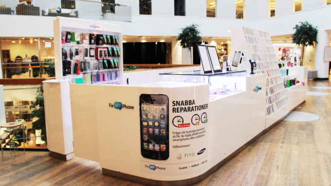

Göteborgsföretaget Fix My Phone fortsätter att expandera på västkusten.
Mobilreparatören med ledorden tillgänglighet och service öppnade i början av april 2016 sin tionde butik, denna gång i Varberg. Och snart är det dags för invigningsfest.
– Vi kommer ha grymt bra erbjudanden för alla som kommer till invigningen. Varberg är en sommarstad med många besökare och det ska vara enkelt att laga sin mobil även under semestern. Det är väldigt roligt att vara här och träffa nya kunder, säger Chalak Morad, grundare och vd på Fix My Phone.
Inför sommaren inviger Fix My Phone sin servicebutik i Varberg, deras tionde i ordningen. Mobilreparatören har butiker i Göteborg, Borås, Norrköping, Stockholm, Stenungsund och nu även i Varberg.
– Vi finns i mitt i Varberg precis vid kyrkan och har faktiskt haft öppet ett tag. Butiken blev snabbt populär hos Varbergborna och vi älskar att möta nya kunder. Nu ska vi hjälpa alla sommargäster också.
Under invigningseventet kommer det finnas flera spännande erbjudanden, bland annat kommer de tio första besökarna få mobilen lagad för tio kronor. Även hörlurar och sportarmband kommer att säljas för samma pris så långt lagret räcker.
– När vi öppnade den första butiken i Arkaden i Göteborg hade vi ett väldigt populärt invigningsevent med bland annat mobilskal för en krona styck. Köerna ringlade från morgon till kväll. Vi hoppas givetvis på en lika lyckad öppning i Varberg.
Fix My Phones målsättning är att erbjuda god service som är tillgänglig och snabb. Mobilreparatören vill hjälpa sina kunder med alla deras mobil- och surfplatteproblem.
– Det ska vara lätt och smidigt att få sin telefon lagad med högsta kvalitet. Hos oss kan du lämna in mobilen och ta en glass i solen under tiden. De flesta av reparationerna klarar vi på under en timma och självklart använder vi delar med samma höga kvalitet som tillverkarna, säger Chalak Morad.


 
